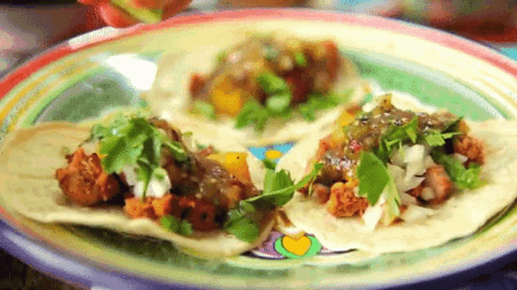

Saiba um pouco mais sobre a gastronomia do Mexico!
Você provavelmente já ouviu falar de algum aspecto da cultura mexicana. Os mariachis, os sombreros, a comemoração do dia dos mortos, a tequila, a paleta mexicana ou a comida apimentada. Por ser tão grande, o México, assim como o Brasil, tem particularidades diferentes em cada região. Mas, quando se fala da gastronomia, existem pratos tradicionais e apetitosos comuns a todo o país. |
 |